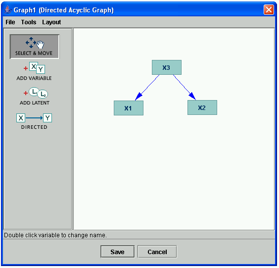
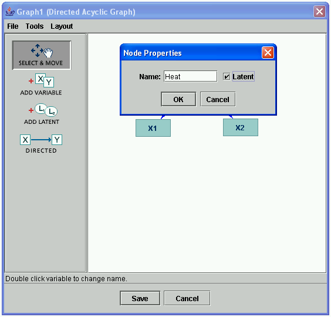
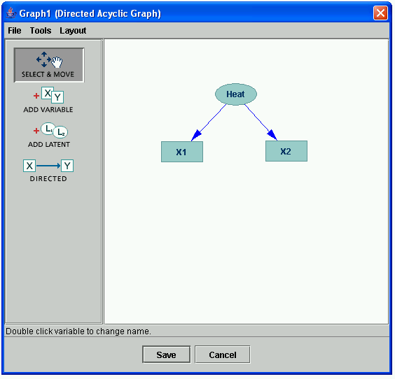

Editing Node Properties |
Nodes have two properties: a name, and whether or not they're latent. To edit these properties for a particular node, double click that node, set the properties the way you want, and click "OK."
Consider the following example.

Here we have a graph using default node names X1, X2, and X3. We would like this to read "Heat, a latent variable, causes volume and pressure," so we need to change the name "X3" to "Heat" and make it latent. Double clicking X3, the following dialog comes up:

Clicking "OK," the result looks like this:
